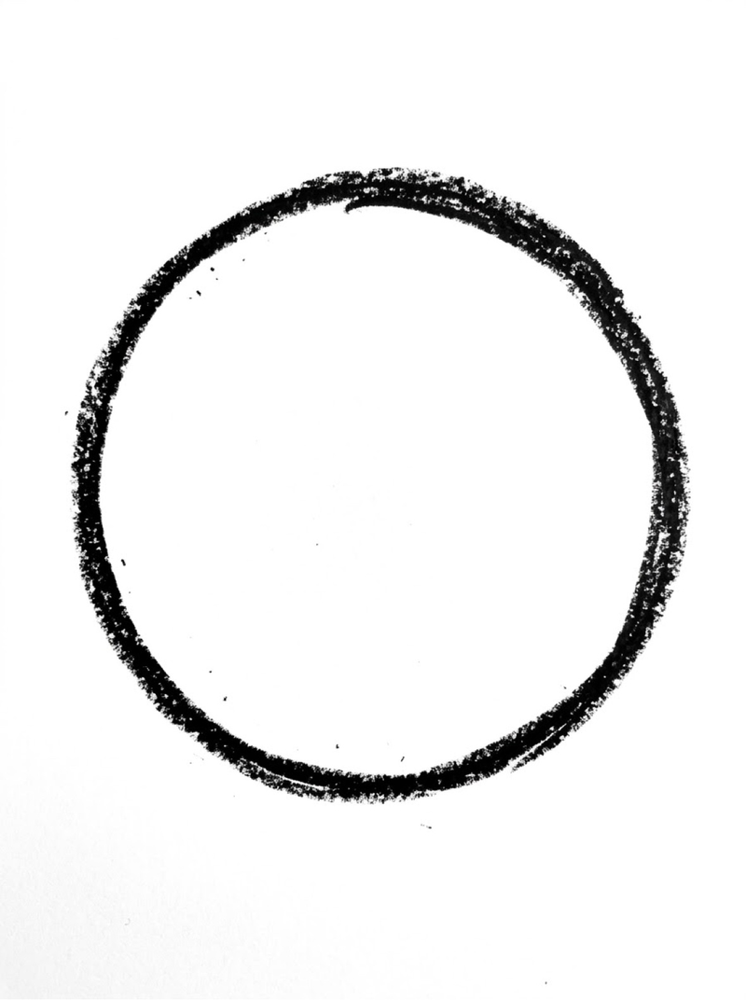
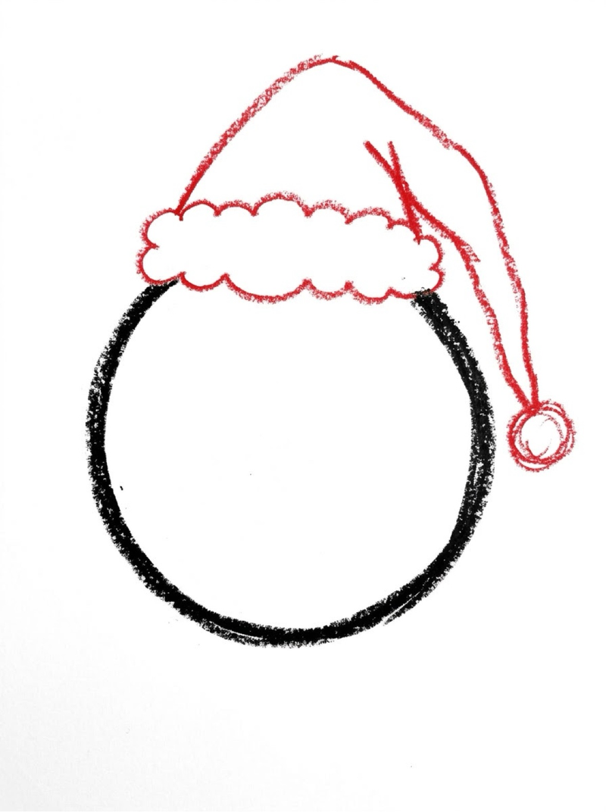
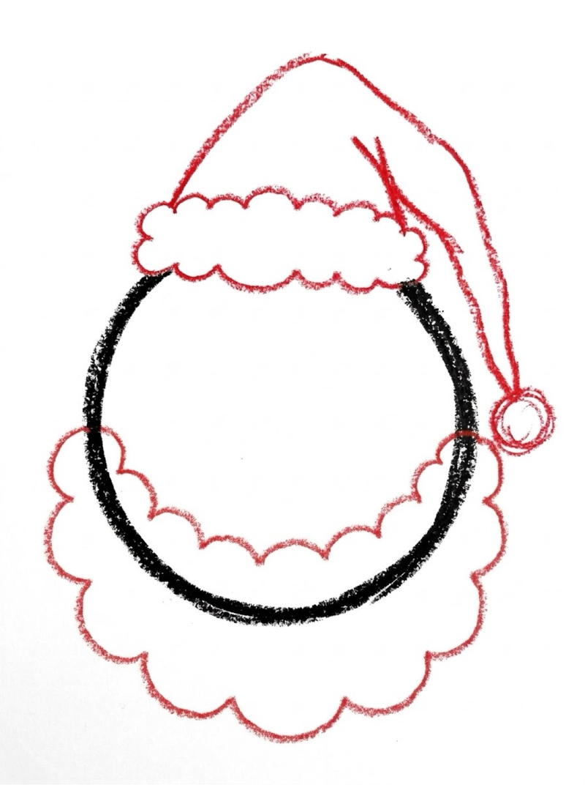
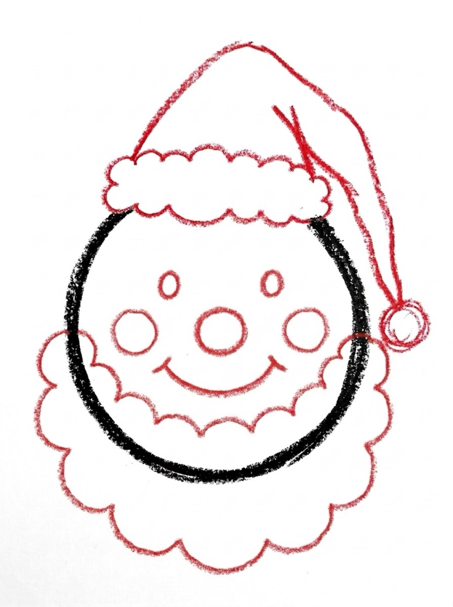
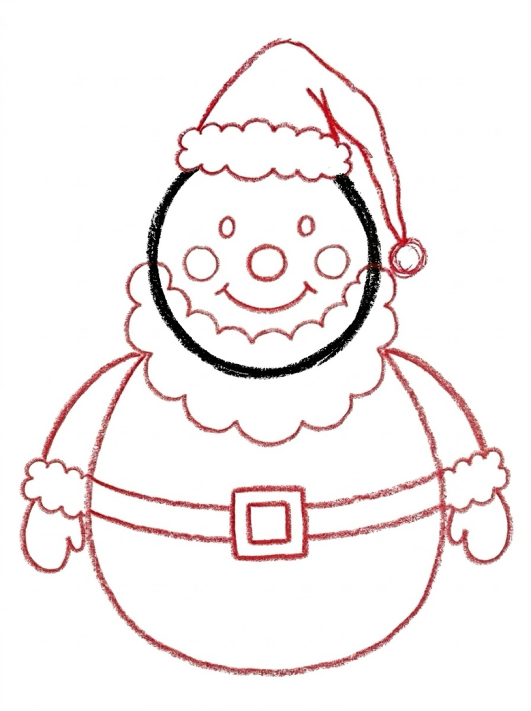
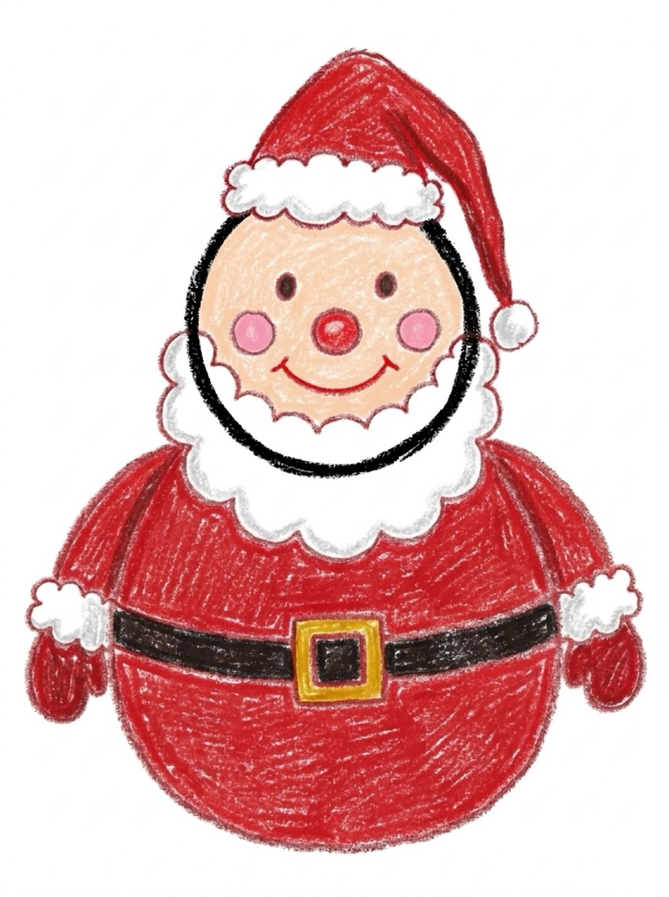

Santa Drawing for Kids How to Draw a Santa in 6 Easy Steps
Quick Answer
This free step-by-step tutorial shows kids how to draw Santa in six easy steps: a round face, a floppy hat, a big fluffy beard, a jolly face, and a merry red suit with a belt. Download the printable PDF, grab crayons, and follow along together. Made for ages 3 and up — no signup needed, just print and draw.
At a Glance
- Subject: How to draw a santa
- Ages: 3+
- Steps: 6 steps
- Time: ~20 min
- Difficulty: Easy
- Supplies: Paper, crayons
Santa is the most requested Christmas drawing — and this one is built from a circle and bumpy curves, so even wobbly beards look jolly. Kids love the beard step because bigger is always better. It's the perfect December drawing for the fridge.
✏️ Draw Santa in 6 Easy Steps
One step per box — this step by step santa drawing shows each new part in a different color so kids can see exactly what changed.
Step 1: The Face

Draw a big circle in the middle of your paper. This round shape becomes Santa's face.
Step 2: The Hat

Draw a floppy triangle hat on top of the circle, drooping to one side, with a round pom-pom at the tip and a fluffy brim across the forehead.
Step 3: The Beard

Draw a big cloud-shaped beard under the face — bumpy curves going around the bottom of the circle. The bigger the beard, the better the Santa.
Step 4: The Face Details

Add two dot eyes, rosy cheek circles, a round nose, and a big smile peeking out above the beard. The smile sits right at the top edge of the beard.
Step 5: The Suit

Draw a rounded body under the beard with a black belt across the middle and a square buckle. Two simple arm curves on the sides finish him off.
Step 6: Color It In

Color your Santa! Red hat and suit, white beard and brim, pink cheeks. He's ready for Christmas Eve.
📊 Santa Drawing by Age
Every age can join in — just adjust the job.
| Age | What they can do | Tip |
|---|---|---|
| 3–4 | Trace the circle and beard on the printable | Draw the hat for them — the droop is tricky |
| 4–5 | Follow all 6 steps with a little help | Let them make the beard extra big — bigger is funnier |
| 6+ | Draw solo and add their own details | Challenge: draw Santa waving, or draw his sleigh |
🖨️ Download Your Free Santa Drawing Printable
The printable lays out all 6 steps one per box, big enough for little hands — kids draw right alongside each step.
⬇️ Open Free Printable 🖨️ Print🎁 Free printable for ages 3+
🎅 Santa's Workshop Challenge
Draw Santa, then draw what he's holding — a giant gift bag, a list of names, or a plate of cookies. Adding a prop turns a character drawing into a storytelling drawing, and kids love deciding what Santa is up to. Ask them: where is he going next?
What You'll Need to Draw a Santa
Grab crayons or markers — Santa is a red-and-white drawing, so those two colors do the heavy lifting. You'll also want pink for cheeks, black for the belt and eyes, and yellow or gold for the buckle. Standard printer paper works fine.
What They're Learning
This Santa tutorial practices circles and curved shapes — the cloud-like beard is bumpy-curve practice that builds wrist flexibility. Layering shapes (hat on head, beard under face, body under beard) teaches kids that drawings are built in layers, front to back. Placing the smile just above the beard builds careful spatial planning.
Make It Yours
Once the basic Santa is done, try these twists: give him sunglasses for a cool Santa, draw him holding a candy cane, or make a baby Santa with a smaller beard. Kids can also draw Mrs. Claus next to him — same steps, smaller beard, add a bun in her hair. A whole North Pole scene with reindeer is the ultimate version.
🛒 Our Favorite Drawing Supplies
These are the supplies we reach for in our own home — washable (because kids), quality paper, and enough colors to avoid fights.
As an Amazon Associate, MomYouNeedThis earns from qualifying purchases — at no extra cost to you.
💡 Santa Drawing Tips for Parents
Santa's beard is the biggest section and the most forgiving — wobbly lines disappear in the fluff. If your child struggles with the hat, remind them it flops to one side on purpose; a straight-up hat would look wrong. The belt buckle is a small detail that makes kids proud when they get it right, so let them take their time on it.
Two things that help with every santa drawing attempt: let them pick the colors (a blue santa is still a santa), and don't fix their drawing. If they ask for help, draw on a separate piece of paper, not on theirs. Kids who feel ownership of their drawing come back for the next one; kids who feel corrected stop trying. The goal is a santa they're proud of, not a perfect one.
🎅 Santa in Stories Around the World
The Santa in this drawing — red suit, white beard, round belly — grew out of stories about Saint Nicholas, a kind bishop remembered for secret gift-giving, retold and redrawn for centuries until poems and pictures in the 1800s settled his look. The eight reindeer got their names from a famous poem, and the ninth, with the glowing nose, arrived a hundred years later in a department-store storybook.
Santa has colleagues around the world: the Christkind in Germany, Père Noël in France, and Ded Moroz in Russia, who travels with his granddaughter. Different names, same department — arriving quietly, leaving gifts, eating the snacks left out. Ask your child what snack their Santa is hoping for this year; the answer is market research for December.
❓ Santa Drawing FAQs
What is the easiest way for a kid to draw Santa?
Start with a circle for the face, add a floppy hat on top and a big bumpy beard below. Give him dot eyes, rosy cheeks, and a smile, then add a rounded red suit with a belt. Circles and curves do all the work.
What age can kids start learning to draw Santa?
Most kids can follow the circle-and-beard method around age 4 with a grown-up helping, and draw one on their own by ages 5 to 6. Younger children can trace the face and beard on the printable.
What supplies do we need to draw Santa?
Just paper and crayons or markers. The free printable PDF lays out all six steps one per box so kids can draw right alongside each step. Red and white are the must-have colors.
Is the Santa drawing printable really free?
Yes — every printable on MomYouNeedThis is 100% free to download and print. No signup, no payment, just tap the download button.
How do I print the Santa drawing tutorial?
Open the PDF and print at 100% scale (not 'fit to page') so the drawing boxes stay big enough for little hands. The printable is designed to stay large — never shrunk to force a fit.
How does a santa drawing step by step tutorial work?
Each of the six pictures shows Santa so far, with the newest part drawn in a fresh color. Your child copies just the colored part — face, hat, beard, suit — and checks it before moving on to the next picture.
How does a santa claus drawing step by step tutorial work?
The same tutorial under his full name: the face and hat come first, then the famous beard, the red suit, and the toy sack last — each on its own picture, so the whole jolly figure never has to be drawn at once.
📚 Keep Exploring
- ✏️ All Drawing Tutorials 76 free step-by-step drawing tutorials for kids.
- 🐾 Animal Coloring Free printable animal coloring pages for little learners.
- ✏️ Drawing Practice Free printable drawing pre-writing worksheet for toddlers.